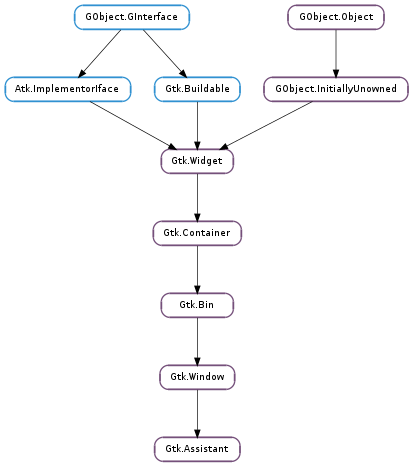

| static | new() |
| add_action_widget(child) | |
| append_page(page) | |
| commit() | |
| get_current_page() | |
| get_n_pages() | |
| get_nth_page(page_num) | |
| get_page_complete(page) | |
| get_page_header_image(page) | |
| get_page_side_image(page) | |
| get_page_title(page) | |
| get_page_type(page) | |
| insert_page(page, position) | |
| next_page() | |
| prepend_page(page) | |
| previous_page() | |
| remove_action_widget(child) | |
| remove_page(page_num) | |
| set_current_page(page_num) | |
| set_forward_page_func(page_func, *data) | |
| set_page_complete(page, complete) | |
| set_page_header_image(page, pixbuf) | |
| set_page_side_image(page, pixbuf) | |
| set_page_title(page, title) | |
| set_page_type(page, type) | |
| update_buttons_state() |
None
| Name | Parameters | Return | Description |
|---|---|---|---|
| apply | The ::apply signal is emitted when the apply button is clicked. The default behavior of the Gtk.Assistant is to switch to the page after the current page, unless the current page is the last one. A handler for the ::apply signal should carry out the actions for which the wizard has collected data. If the action takes a long time to complete, you might consider putting a page of type Gtk.AssistantPageType.PROGRESS after the confirmation page and handle this operation within the Gtk.Assistant ::prepare signal of the progress page. | ||
| cancel | The ::cancel signal is emitted when then the cancel button is clicked. | ||
| close | The ::close signal is emitted either when the close button of a summary page is clicked, or when the apply button in the last page in the flow (of type Gtk.AssistantPageType.CONFIRM ) is clicked. | ||
| prepare | Gtk.Widget | The ::prepare signal is emitted when a new page is set as the assistant’s current page, before making the new page visible. A handler for this signal can do any preparations which are necessary before showing page. |
| Name | Type | Access |
|---|---|---|
| parent | Gtk.Window | r |
Bases: Gtk.Window
A Gtk.Assistant is a widget used to represent a generally complex operation splitted in several steps, guiding the user through its pages and controlling the page flow to collect the necessary data.
The design of Gtk.Assistant is that it controls what buttons to show and to make sensitive, based on what it knows about the page sequence and the type of each page, in addition to state information like the page completion and committed status.
If you have a case that doesn’t quite fit in Gtk.Assistants way of handling buttons, you can use the Gtk.AssistantPageType.CUSTOM page type and handle buttons yourself.
Gtk.Assistant as Gtk.Buildable
The Gtk.Assistant implementation of the Gtk.Buildable interface exposes the action_area as internal children with the name “action_area”.
To add pages to an assistant in Gtk.Builder, simply add it as a <child> to the Gtk.Assistant object, and set its child properties as necessary.
| Returns: | a newly created Gtk.Assistant |
|---|---|
| Return type: | Gtk.Widget |
Creates a new Gtk.Assistant.
| Parameters: | child (Gtk.Widget) – a Gtk.Widget |
|---|
Adds a widget to the action area of a Gtk.Assistant.
| Parameters: | page (Gtk.Widget) – a Gtk.Widget |
|---|---|
| Returns: | the index (starting at 0) of the inserted page |
| Return type: | int |
Appends a page to the assistant.
Erases the visited page history so the back button is not shown on the current page, and removes the cancel button from subsequent pages.
Use this when the information provided up to the current page is hereafter deemed permanent and cannot be modified or undone. For example, showing a progress page to track a long-running, unreversible operation after the user has clicked apply on a confirmation page.
| Returns: | The index (starting from 0) of the current page in the assistant, or -1 if the assistant has no pages, or no current page. |
|---|---|
| Return type: | int |
Returns the page number of the current page.
| Returns: | the number of pages in the assistant |
|---|---|
| Return type: | int |
Returns the number of pages in the assistant
| Parameters: | page_num (int) – the index of a page in the assistant, or -1 to get the last page |
|---|---|
| Returns: | the child widget, or None if page_num is out of bounds |
| Return type: | Gtk.Widget |
Returns the child widget contained in page number page_num.
| Parameters: | page (Gtk.Widget) – a page of assistant |
|---|---|
| Returns: | True if page is complete. |
| Return type: | bool |
Gets whether page is complete.
| Parameters: | page (Gtk.Widget) – a page of assistant |
|---|---|
| Returns: | the header image for page, or None if there’s no header image for the page |
| Return type: | GdkPixbuf.Pixbuf |
Gets the header image for page.
| Parameters: | page (Gtk.Widget) – a page of assistant |
|---|---|
| Returns: | the side image for page, or None if there’s no side image for the page |
| Return type: | GdkPixbuf.Pixbuf |
Gets the side image for page.
| Parameters: | page (Gtk.Widget) – a page of assistant |
|---|---|
| Returns: | the title for page |
| Return type: | str |
Gets the title for page.
| Parameters: | page (Gtk.Widget) – a page of assistant |
|---|---|
| Returns: | the page type of page |
| Return type: | Gtk.AssistantPageType |
Gets the page type of page.
| Parameters: |
|
|---|---|
| Returns: | the index (starting from 0) of the inserted page |
| Return type: |
Inserts a page in the assistant at a given position.
Navigate to the next page.
It is a programming error to call this function when there is no next page.
This function is for use when creating pages of the Gtk.AssistantPageType.CUSTOM type.
| Parameters: | page (Gtk.Widget) – a Gtk.Widget |
|---|---|
| Returns: | the index (starting at 0) of the inserted page |
| Return type: | int |
Prepends a page to the assistant.
Navigate to the previous visited page.
It is a programming error to call this function when no previous page is available.
This function is for use when creating pages of the Gtk.AssistantPageType.CUSTOM type.
| Parameters: | child (Gtk.Widget) – a Gtk.Widget |
|---|
Removes a widget from the action area of a Gtk.Assistant.
| Parameters: | page_num (int) – the index of a page in the assistant, or -1 to remove the last page |
|---|
Removes the page_num ‘s page from assistant.
| Parameters: | page_num (int) – index of the page to switch to, starting from 0. If negative, the last page will be used. If greater than the number of pages in the assistant, nothing will be done. |
|---|
Switches the page to page_num.
Note that this will only be necessary in custom buttons, as the assistant flow can be set with Gtk.Assistant.set_forward_page_func ().
| Parameters: |
|
|---|
Sets the page forwarding function to be page_func.
This function will be used to determine what will be the next page when the user presses the forward button. Setting page_func to None will make the assistant to use the default forward function, which just goes to the next visible page.
| Parameters: |
|
|---|
Sets whether page contents are complete.
This will make assistant update the buttons state to be able to continue the task.
| Parameters: |
|
|---|
Sets a header image for page.
| Parameters: |
|
|---|
Sets a side image for page.
This image used to be displayed in the side area of the assistant when page is the current page.
| Parameters: |
|
|---|
Sets a title for page.
The title is displayed in the header area of the assistant when page is the current page.
| Parameters: |
|
|---|
Sets the page type for page.
The page type determines the page behavior in the assistant.
Forces assistant to recompute the buttons state.
GTK+ automatically takes care of this in most situations, e.g. when the user goes to a different page, or when the visibility or completeness of a page changes.
One situation where it can be necessary to call this function is when changing a value on the current page affects the future page flow of the assistant.